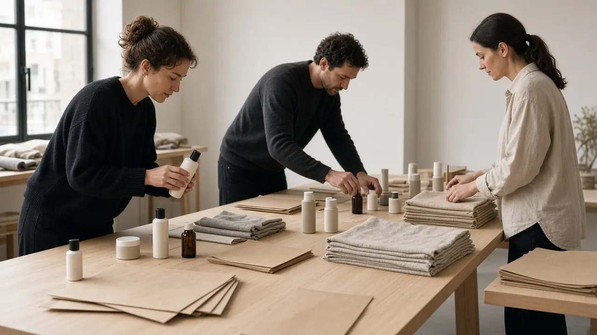

01
Human Network
People in a photo honeycomb, with businesses and partners as two large photographic panels.
BeeHive.Partners
Twelve visual directions for review
V1 concepts stay archived and are not part of this comparison. Baseline V1 stays unchanged.
01
People in a photo honeycomb, with businesses and partners as two large photographic panels.

02
A diagonal split: the business story in forest green, the partner story in warm honey.

03
The honeycomb is the page. Photos, words and empty cells change density as you scroll.

04
Magazine scale. A large headline beside one photograph with hexagon overlays.

05
A gold chain from business, through BeeHive, to promotion, a customer and growth.

06
Four phases as a visual journey, from a light start to a deep professional partnership.

07
A dark forest network. BeeHive at the centre, with business, creator, retail and trainer around it.

08
A photographic mosaic across wellness, skincare, accessories, food and local retail.

09
A living network. Connections draw from BeeHive toward business, partner, campaign and customer.

10
Phosphor marks carry the story. Forest for business, honey for partners, gold for what they share.

11
Full-bleed commerce chapters: the business, the partner, the customer and the relationship.

12
A sticky relationship diagram updates as the eight steps of one partnership scroll past.